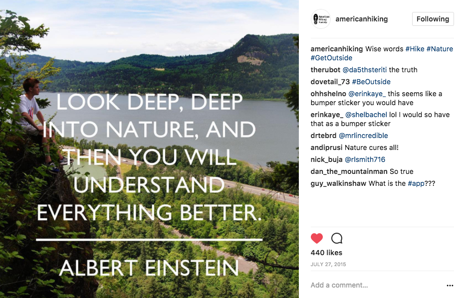
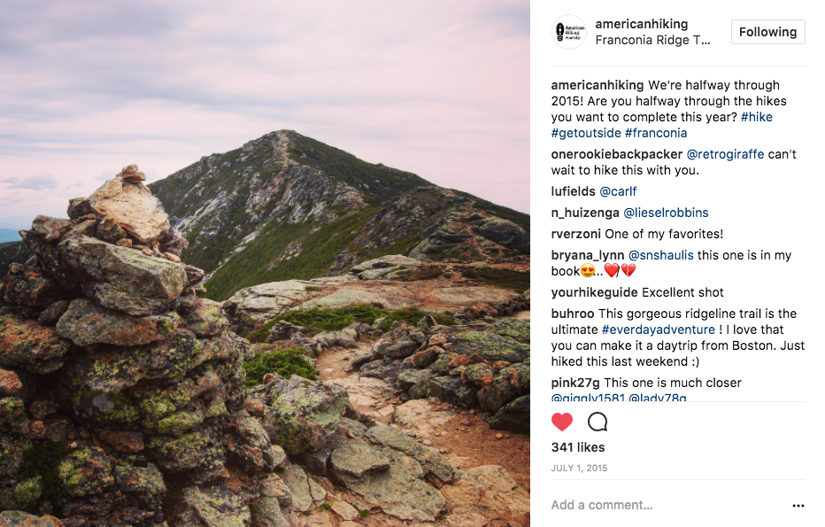
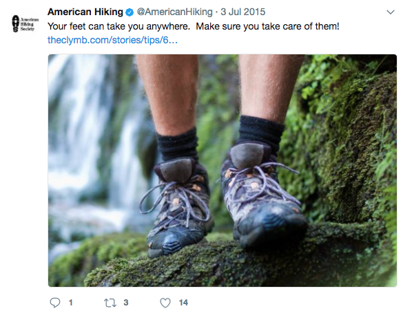
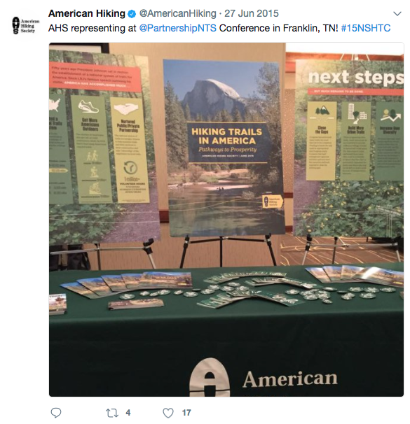

Managed the American Hiking Society Instagram account summer 2015. developed custom posts and shared member-contributed content.
 Contributed to the American Hiking Society Twitter Account. Shared media from other sites to increase reach, and promoted AHS contests and events to develop the organization's awareness.
 